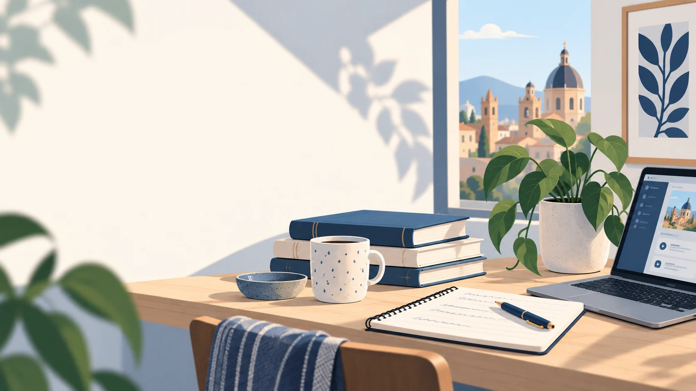

Vocabulary
Practice common words and verbs from spoken Mexican Spanish with spaced repetition.
Open Flashcards
CLASES DE ESPAÑOL
Your class materials, practice tools and learning resources—all in one place.
PRACTICE TOOLS
Choose a tool for independent practice or keep working on your current unit.
Practice common words and verbs from spoken Mexican Spanish with spaced repetition.
Open FlashcardsStrengthen your verb forms by tense and conjugation pattern.
Open ConjuFlowGet a writing task, extra practice or feedback—no unit code needed. Following the structured course? Add yours to focus on our class work.
Open Writing TrainerPractice through a guided conversation on a topic you'd like to work on—no unit code needed. Following the structured course? Add yours to focus on our class work.
Open Conversation TrainerA SMALL STEP IS ENOUGH
10 minutes is enough.
Here are a few simple ideas to keep going:
Look at a few notes from your last lesson, close them, and see what you can remember.
Talk to yourself, write a short note, or describe what you're doing. Simple Spanish is enough.
Read or listen to something short and keep one expression or sentence pattern you would actually like to use.
KEEP LEARNING
Explore additional materials and see the bigger picture.
Vocabulary lists, conjugation references and other useful materials.
Explore resourcesSee the learning structure from A1 to B2 and explore what’s next.
Explore the roadmap